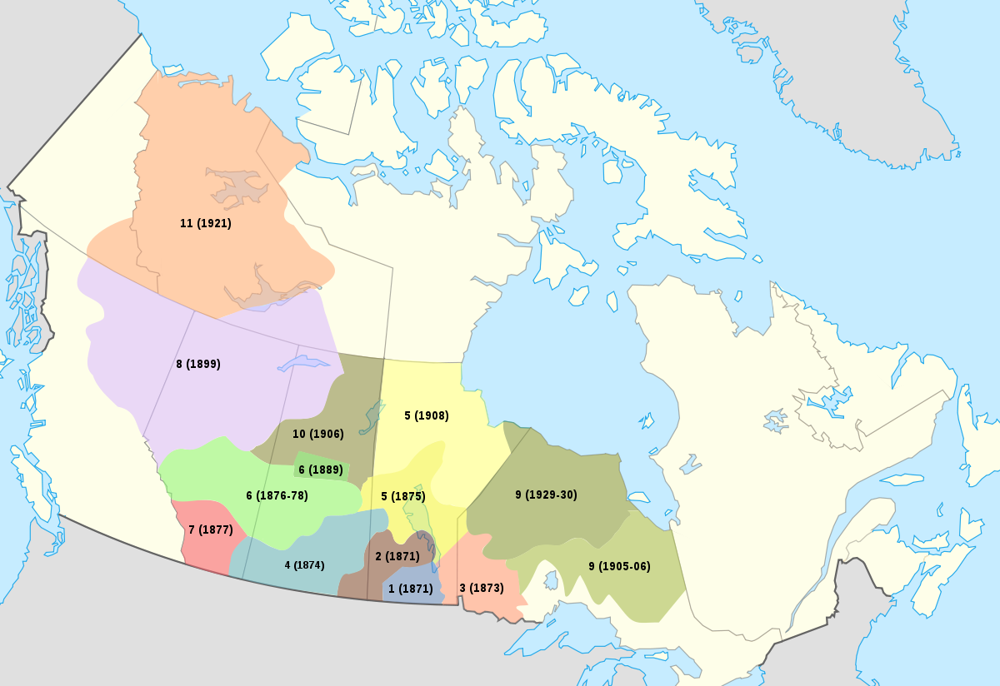

Treaty 1 was signed August 1,1871. It was signed in Lower Fort Garry, which is located in St. Andrews, Manitoba. Treaty 1 was the first Treaty that was signed that helped establish Canada as the country we know today. The Indigenous people had been living on the land for thousands of years, then Europeans came. Indigenous people had to find a way to live with the European settlers. Their way to live in peace with Europeans was to sign Treaties to help establish boundaries with the Europeans about what land they could build on and take materals from.
"Treaty 1 will be in place “as long as the sun shines, the grass grows and the river flow”


What nation are a part of Treaty 1
This is the land of the Peguis First Nation, Sagkeeng First Nation, Brokenhead Ojibway Nation, Roseau River Anishinaabe First Nation, Long Plain First Nation, Sandy Bay Ojibway First Nation and Swan Lake First Nation. Treaty 1 is the traditional lands of the Anishinaabeg, Cree, Oji-Cree, Dakota, and Dene Peoples, as well as the homeland of the Métis nation.
Each band was to be provided 160 acres for each family of 5 but could vary. Each person in the family is to receive 3 bonus and a yealy totalling $15 per family of 5